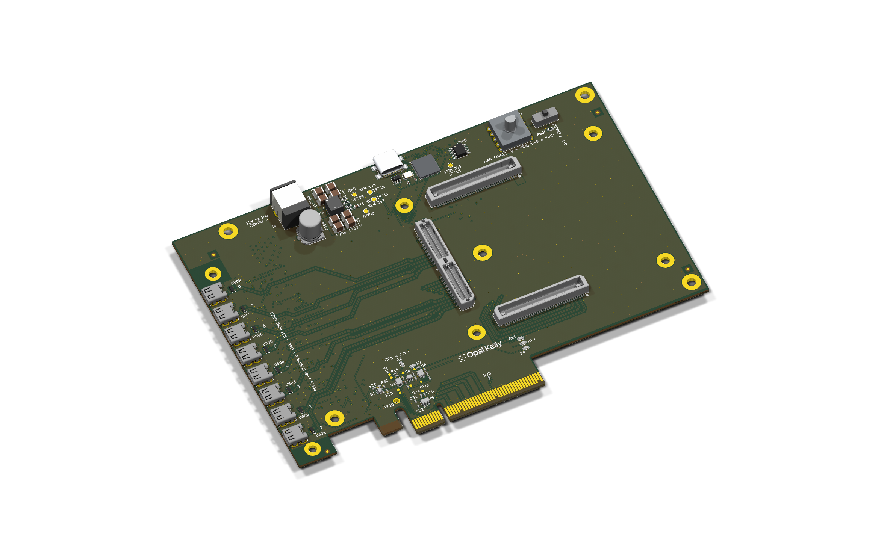
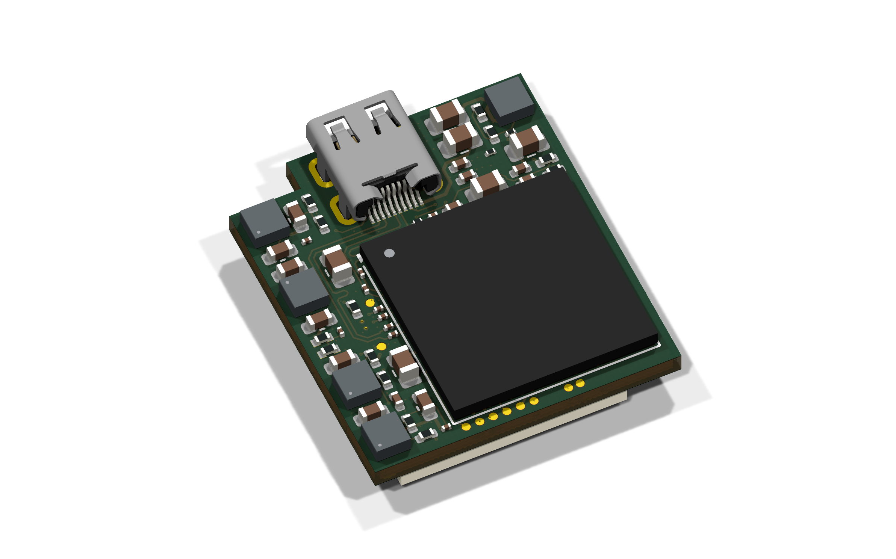
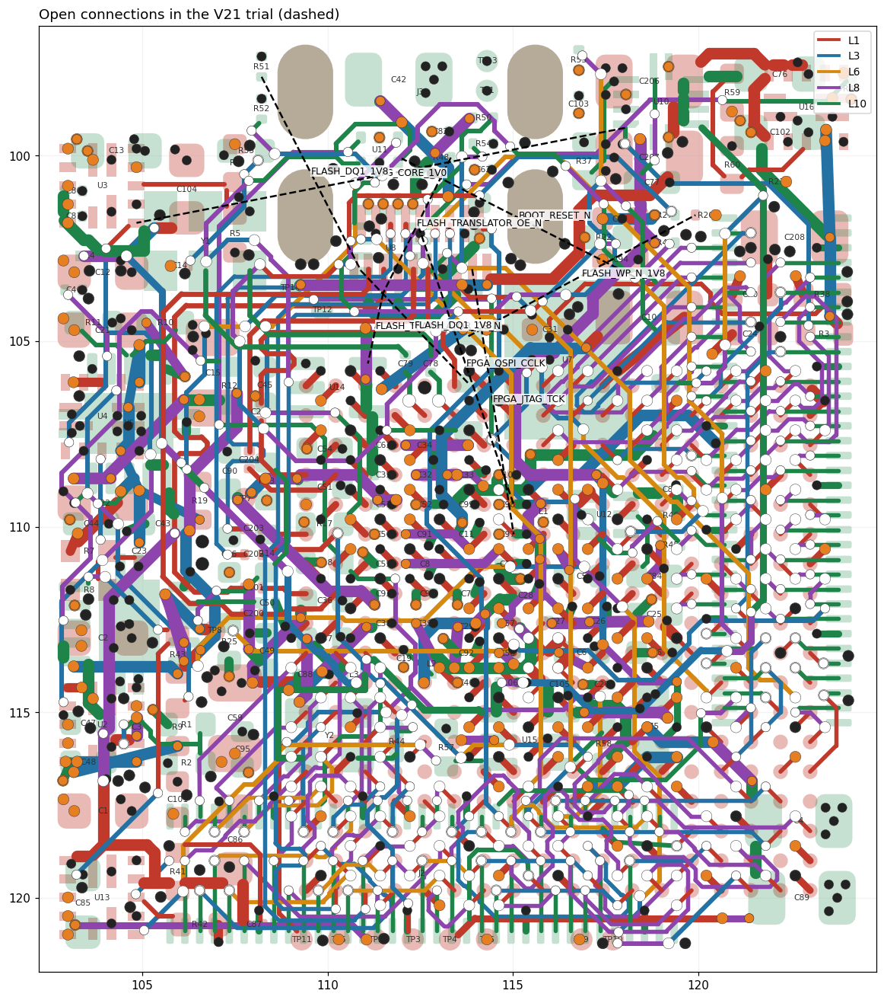
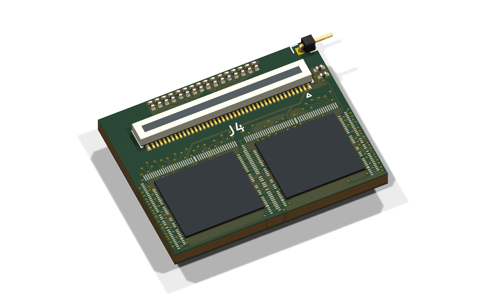

HDMI Extension Board
XEM8310 · eight Micro-HDMI ports · PCIe x4 · 6 layers · 167.65 × 114.10 mm

Layers, planes, parts and netsOpen full view ↗

Frontend FPGA Board
Artix-7 XC7A35T · 10 layers · 22.59 × 25.42 mm

Layers, planes, parts and netsOpen full view ↗


ASIC board
Two ASICs · 10 layers · two 80-pin DF40 connectors

Layers, planes, parts and netsOpen full view ↗
